Learner profiles
Structured profiles with real academic information
Elmy provides academic resources, assessment insights and project delivery for education institutions. Our team reviews institutional requirements and defines the academic and technical work needed.
Operating experience → Elmy founded → Building with institutions
Elmy was founded in 2024. Its team brings more than fifteen years of education operating experience across learners, educators, schools and education partners.
This experience identified a recurring requirement: connecting learning data, academic interpretation and operational delivery so institutions can evaluate needs and allocate support.
Educators and technologists work together on academic resources, assessment insights and projects scoped to institutional requirements.
“We didn’t enter education through technology.
We entered technology through education.”
These principles guide requirements analysis, academic review and delivery.
Academic requirements determine the technology scope.
Define the academic requirement and intended users before selecting a product or implementation approach.
Review evidence before defining an intervention.
Review assessment findings and institutional context before defining the response.
Learning needs vary across learners and assessed topics.
Educators use diagnostic results and recurring errors to select assignments and determine support requirements.
Earlier evidence gives educators more time to review learning needs.
Educators review assessment and activity signals to decide whether a learner needs support.
Review subsequent performance against agreed indicators.
Review subsequent performance to decide whether support needs to change.
As of September 2026
Users recorded across Elmy learning environments.
Education operations inform our approach to implementation.
Structured profiles with real academic information
A growing bank of structured, tagged academic content
Learning environments created and managed through Elmy
Assessment delivered at institutional scale
Reached through Elmy-enabled programs and partnerships
Operating experience behind the product
Elmy is part of the House of Prep ecosystem, alongside TestPrep, PrepMe and Taleb. These education environments inform our work in resources, assessment and learning technology.

Diagnostic assessment and practice.
Explore TestPrep 02
Learning activity and reporting.
Explore PrepMe 03Academic program configuration.
Explore TalebExperience across these programs informs resource development, assessment workflows and platform configuration.
Elmy’s contribution extends from preparing academic resources to interpreting findings and coordinating implementation. The roles and support involved depend on the service you select.
Academic and content specialists help define resource requirements, organize material and review it against the agreed brief.
Under Elmy Impact, academic experts review findings in context, discuss their limitations and recommend priorities for support.
For scoped projects, implementation and technology teams coordinate requirements, delivery responsibilities and agreed review points.
Support is defined before work begins. We agree the relevant expertise, responsibilities and follow-up with your institution. Academic decisions remain with your team.
Discuss Your Support NeedsDescribe your academic objectives, operational requirements and implementation context.